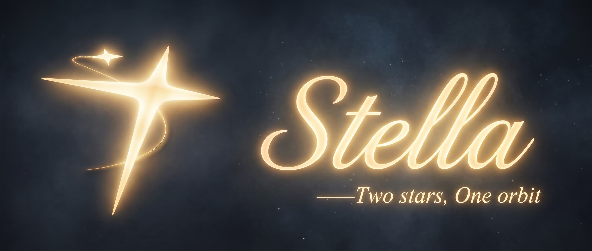

一个依托记忆系统进行拟人化聊天的 QQ 群聊机器人
只要 8192 tokens 的上下文预算——小到几乎能在任何模型上工作,本地小模型或在线大 API,随意混搭。

Stella 的设计前提是上下文窗口很小——基准上限是 8192 tokens。人格、记忆、历史对话、工具结果要在这么小的预算里共存,靠堆 prompt 是不可能的。Stella 的解法是把预算拆开:窗口减去 1000 输出预留与 200 安全余量才是输入预算,超出就从最旧的尾巴开始丢。
过滤与排序在数据库层完成,候选与置信度不占对话预算;聊天素材区注入上限 500 tokens(技术场景 1000),行为约束区只有 150。
插件调用不发生在对话窗口内,Result.data 全程不进 prompt,只把不超过 300 字的一句结论交回给 Stella —— 插件装再多,占的也不是对话窗口。
会话摘要 / 最近 12 条原始尾巴 / 话题摘要三层按消息 id 划分、绝不重叠;压缩在回复发出后异步进行,不阻塞当前回复,摘要下一轮生效。
小窗口能跑,大窗口自然更宽裕;但反过来不成立 —— 假设窗口无限的架构,换到 8K 上会直接失控。
Stella 不只是把消息丢给大模型换一句回复。它把群聊里零散的信息沉淀成可检索、可验证、会遗忘的记忆,并在合适的时机主动开口了解你。
Router 先判断这句话需要什么能力,人格 Prompt 只保留角色设定。工具执行在聊天上下文之外完成,只回传结论。
会话摘要、原始尾部、话题摘要三层按 id 切分、互不重叠,群聊刷屏一整天也追得上进度。
记忆分七类(事实 / 偏好 / 事件 / 计划 / 关系 / 风格 / 群语境),带十种用途标签与四级可见性。受限级永不作为聊天素材,只用于行为约束。
捕获宽松、晋升严格:候选每被复现一次置信度 +0.12,≥ 0.85 直接转正,0.6 – 0.85 进观察区等证据。宁可漏记,不可错记。
CHAT / ROUTER / PLUGIN / COMPACT / CONSOLIDATION / EXTRACT / VISION 七个角色可各自指定端点,4 个端点槽本地 / 在线任意混搭,框架不绑定任何厂商。
默认 23:30 – 07:30 是睡觉时间(支持时区),被 @ 仍会回复;token 用量按角色 / 端点记日账,每日预算撞线默认只暂停记忆整理,群里照常说话。
Stella 的记忆围绕证据构建:每条长期记忆都能追溯到来源消息,可信度不足的候选会被打回继续观察。
来源分三级:对 Stella 亲口说的单次即可采信;旁听到的需复现确认;Stella 自己的话只作上下文,绝不产出候选。
Stella 会自己开口问:每日 2 次(高活跃群最多 +2),同一用户 2 小时冷却,连续 2 次没被回应就不再追问——信息来自用户亲口所说,而不是模型的猜测。
记忆空间按"人"组织而非按"群"隔离,换个群也能认出你;消息尾巴与话题状态按群隔离,隐私分区仍受 Policy 约束。
SQLite FTS5 关键词 + 向量语义双路召回,按语义 0.35 / 上下文 0.25 / 用途 0.20 / 新近 0.10 / 置信 0.05 / 重要 0.05 排序,8 种行为模式动态决定取几条。
类型化生命周期:群语境 30 天、事件 / 计划 60 天、偏好 / 关系 180 天、风格 1 年、事实 2 年;每用户 25 条配额,超限竞争淘汰——但只归档,不物理删除。
2600+ 单元测试覆盖记忆晋升、防编造护栏、跨用户隔离与路由降级,全部不依赖真实机器人与网络;AstrBot 插件生态直接兼容。
检索、过滤、注入各自独立演进;记忆系统不与任何具体模型绑定。
任何新能力都要在 8K 预算内自洽,不允许"先塞进 prompt 再说"。
记忆、人格、历史、工具结果的占比随对话状态调整,不是固定模板。
| 注入分区 | 内容 | 上下文预算 |
|---|---|---|
| 聊天素材区 | 按六维排序筛出的记忆内容,与技术场景下放宽到 1000 | ≤ 500 tok |
| 行为约束区 | "Stella 应如何改变行为"的约束,与素材严格分离、绝不混合 | ≤ 150 tok |
| 输出预留 + 安全余量 | 回复生成空间与截断保护,不参与输入 | 1200 tok |
4 个端点槽 × 7 个模型角色,聊天、记忆、整理、工具可以拆开,分别交给本地模型或在线 API。切换部署模式只需在安装器里一键预设,配置不丢数据。
聊天、记忆、embedding、整理、工具全部由本地模型完成,不需要任何 API key。OneClick 包内置 llama.cpp CPU 后端与 qwen3-embedding 向量模型,消息不出家门,可在完全离线的环境运行;代价是响应延迟与硬件占用。
只有对话生成出网,群聊原文不发给服务商;敏感的记忆整理留在本地。对话与记忆各用一把 key——两者提示词前缀完全不同,共用一把会互相冲刷厂商前缀缓存,命中率塌到接近 0。
双 key 直连在线 API,不需要本地大模型,树莓派也能跑。隐私信息仍会经手第三方,不满足零出网条件。
桌面安装器基于 Tauri 2 构建,图形界面完成全部配置;Linux 用户与开发者可直接使用命令行部署。
从 GitHub Releases 下载安装器,内置嵌入式 Python、llama.cpp CPU 后端、NapCat 与 qwen3-embedding-0.6b 向量模型;另有约 1GB 的全离线包与免安装 Standalone 版。
在 NapCat WebUI 添加反向 WebSocket 客户端,指向 ws://127.0.0.1:8080/onebot/v11/ws。
打开 Stella.exe:填监听端口与群号 → 「模型服务」点一键预设 —— 本地模式填 LM Studio 地址 + 模型 ID(可测试连接),在线模式填地址 + key + 模型 ID,对话与记忆两把 key。
「保存并检查」会自动运行 doctor 环境自检,通过后启动;在群里 @ 机器人即可对话。
# 克隆仓库并安装依赖 git clone https://github.com/Eternal-Wanderer-Vegetable/Stella_project.git cd Stella_project pip install -r requirements.txt # 初始化(向导只要求回答 5 个必答项,生成 .env) python -m deploy init # 环境自检(分层:probe 采集 → checks 判断 → report 渲染) python -m deploy doctor # 启动 python -m deploy start
也提供 stella / napcat 双容器 Docker Compose 部署(可选 llama profile,镜像内置 Chromium 与中文字体),详见仓库 README。
通过统一整合层对接任意 OpenAI 兼容端点,框架不绑定任何厂商。